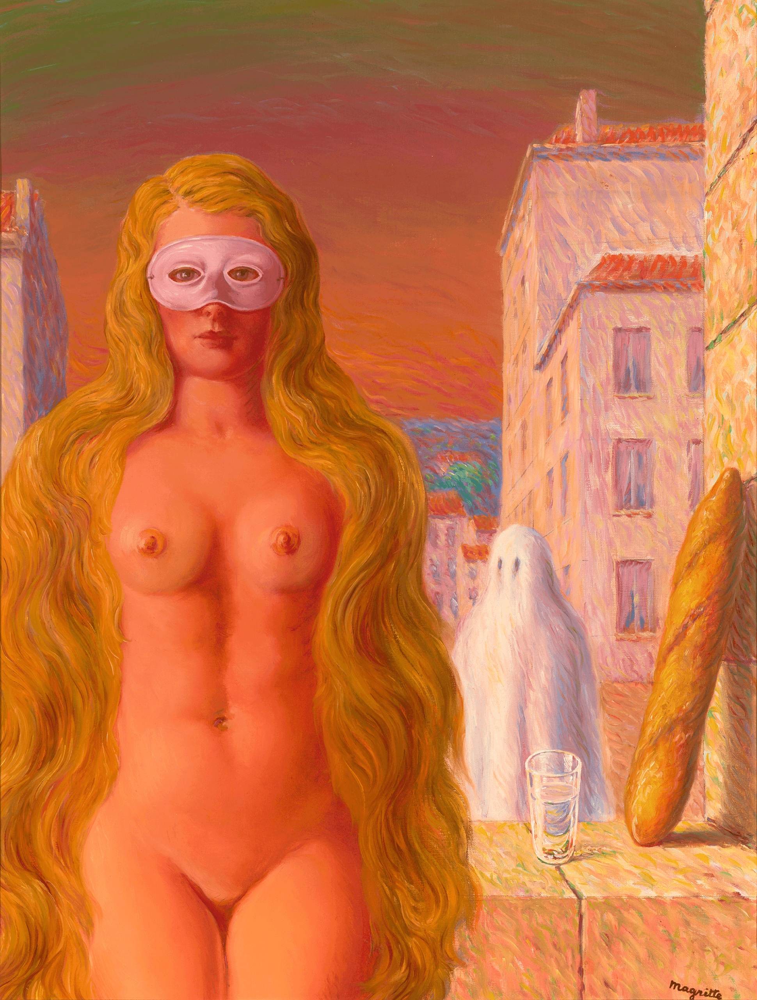
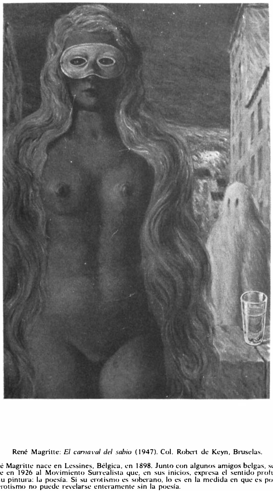

Lágrimas de Eros · Obra 98 de 121
El carnaval del sabio (Le Carnaval du sage)
René Magritte (1947)

Una mujer desnuda de larga melena rubia y antifaz blanco, de pie ante una calle, con un fantasma blanco a su lado, un vaso y una barra de pan. Es de la etapa «Renoir» o «pleno sol» de Magritte, de colores cálidos y pincelada suelta. La compró Robert de Keyn al pintor en 1947, y así lo indica el pie de Bataille.
Lo que hace que destaque
Una mujer desnuda de larga melena rubia y antifaz blanco, de pie ante una calle, con un fantasma blanco a su lado, un vaso y una barra de pan. Es de la etapa «Renoir» o «pleno sol» de Magritte, de colores cálidos y pincelada suelta. La compró Robert de Keyn al pintor en 1947, y así lo indica el pie de Bataille. Bataille la acompaña de una nota que une el erotismo del pintor a la poesía.
Contexto histórico
El pie de la edición española dice «René Magritte: El carnaval del sabio (1947). Col. Robert de Keyn, Bruselas», y es la obra que se ve en la lámina: coinciden la mujer con antifaz, el fantasma, el vaso y el edificio (la lámina recorta arriba y a la derecha). La edición inglesa la titula «Olympia», que es otro cuadro de Magritte (Georgette tendida con una caracola). Firmado abajo a la derecha, con título y fecha al dorso; se expuso en la Galerie Lou Cosyn de Bruselas en 1947. La imagen es la reproducción plana del marchante M.S. Rau, un PNG de paleta reducida. El «soveriegn» del inglés es errata de la edición.
Autoría y procedencia
René Magritte (1898-1967), pintor surrealista belga, conocido por sus ingeniosas y provocativas imágenes que cuestionaban los límites de la realidad y el lenguaje.
En los libros
Las lágrimas de Eros, de Georges Bataille · Lámina de la p. 177
«Si su erotismo es soberano, lo es en la medida en que es poesía. El erotismo no puede revelarse por entero sin la poesía.»If his erotism is soveriegn, it is to the extent that it is poetry. Erotism cannot be entirely revealed without poetry.Georges Bataille, «Las lágrimas de Eros» (1961), traducido al español de la ed. inglesa de City Lights (1989), p. 177
Ficha pendiente de contrastar con fuentes académicas.
Otras vistas
